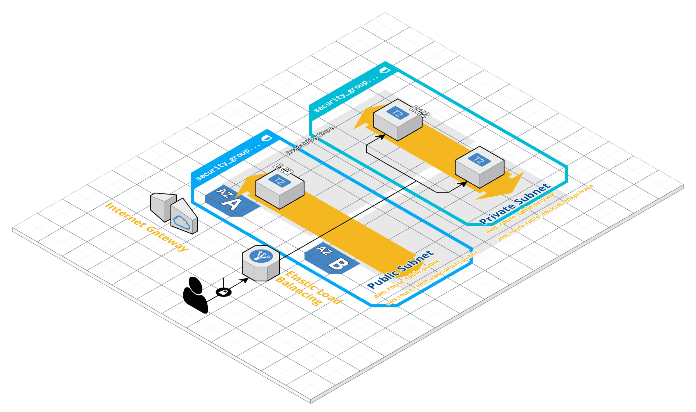

Product-Search-AI is a kotlin based Spring Boot application designed to handle RESTful endpoints for searching products. The service is architected to efficiently perform vector-based searches using embedding data, leveraging microservices and containerization.
Features
- RESTful Endpoints:
search: Accepts a query string and returns relevant product information.add: Allows adding new product details to the database.
- Microservices Architecture: Communicates with an external Python service for embedding generation.
- Containerized Components:
- Spring Boot service
- Python
embedding-service - MongoDB database
- Kubernetes Deployment: All components run in separate containers within a Kubernetes cluster.
System Workflow
- Search Request: The user sends a
searchrequest with string data, e.g., "Latest Apple iPhone." - Embedding Generation: The Spring Boot service calls the
embedding-service, a Python-based web service running in a separate container, to generate embedding data. - Vector Search: The embedding data is used to perform a vector-based search in MongoDB.
- Result Retrieval: The search results from MongoDB are returned to the user.
System Architecture Diagram
Deployment Environment
- Cloud Provider: AWS
- Orchestration Platform: Kubernetes
- Containerization: Docker
Technologies Used
- Spring Boot (Java)
- Python (for the
embedding-service) - MongoDB (NoSQL database)
- Kubernetes (Container orchestration)
- Docker (Containerization)
REST Endpoints
1. POST /search
Description: Accepts a search query and returns relevant results.
Request:
{
"query": "Latest Apple iPhone"
}
Response:
{
"results": [
{
"id": "123",
"name": "Apple iPhone 15",
"description": "Latest model of Apple iPhone."
}
]
}
2. POST /add
Description: Adds a new product to the database.
Request:
{
"id": "123",
"name": "Apple iPhone 15",
"description": "Latest model of Apple iPhone."
}
Response:
{
"message": "Product added successfully"
}
Getting Started
1. Clone the Repository
git clone https://github.com/your-repo/product-search-ai.git
cd product-search-ai
2. Build and Run Services
Spring Boot Application:
./mvnw spring-boot:run
Python Embedding-Service:
python3 embedding_service.py
3. Deploy to Kubernetes
Apply Kubernetes configurations:
kubectl apply -f k8s/
4. Access the Service
Base URL: http://<your-kubernetes-cluster-ip>:<node-port>
Future Enhancements
- Use ElasticSearch for storing embeddings as vector.
- Train a local model explicitly for data
- Implement caching for embedding results.
- Add authentication and authorization.
License
This project is licensed under the MIT License.